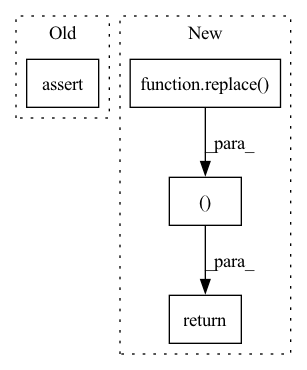

Pattern ID :9233
Before Change
return cutout_square
def declare_state_and_memory(self, previous_state: State) -> Tuple[State, Optional[AllocationQuery]]:
assert previous_state.jit_mode
return previous_state, None
After Change
return cutout_square
def declare_state_and_memory(self, previous_state: State) -> Tuple[State, Optional[AllocationQuery]]:
return replace( previous_state, jit_mode=True), None
In pattern: SUPERPATTERN
Frequency: 3
Non-data size: 4
Instances Fragment ID: 33317176
Project Name: libffcv/ffcv
Commit Name: 077164781a063d2e62fad9083c87f19fa6400b65
Time: 2022-01-19
Author: ailyas@mit.edu
File Name: ffcv/transforms/cutout.py
M Class Name: Cutout
N Class Name: Cutout
M Method Name: declare_state_and_memory(2)
N Method Name: declare_state_and_memory(2)
M Parent Class: Operation
N Parent Class: Operation
M File Name: ffcv/transforms/cutout.py
N File Name: ffcv/transforms/cutout.py
M Start Line: 51
M End Line: 52
N Start Line: 52
N End Line: 52
Before Change
return replace_label
def declare_state_and_memory(self, previous_state: State) -> Tuple[State, Optional[AllocationQuery]]:
assert previous_state.jit_mode
// We do everything in place
return (previous_state, None)
After Change
return replace_label
def declare_state_and_memory(self, previous_state: State) -> Tuple[State, Optional[AllocationQuery]]:
return (replace( previous_state, jit_mode=True), None )
Fragment ID: 33317174
Project Name: libffcv/ffcv
Commit Name: 077164781a063d2e62fad9083c87f19fa6400b65
Time: 2022-01-19
Author: ailyas@mit.edu
File Name: ffcv/transforms/replace_label.py
M Class Name: ReplaceLabel
N Class Name: ReplaceLabel
M Method Name: declare_state_and_memory(2)
N Method Name: declare_state_and_memory(2)
M Parent Class: Operation
N Parent Class: Operation
M File Name: ffcv/transforms/replace_label.py
N File Name: ffcv/transforms/replace_label.py
M Start Line: 53
M End Line: 55
N Start Line: 50
N End Line: 50
Before Change
return collate
def declare_state_and_memory(self, previous_state: State) -> Tuple[State, Optional[AllocationQuery]]:
assert previous_state.stage == Stage.INDIVIDUAL
return replace(previous_state, stage=Stage.BATCH), None
class ToTensor(CoreOp):After Change
return collate
def declare_state_and_memory(self, previous_state: State) -> Tuple[State, Optional[AllocationQuery]]:
return replace( previous_state), None
class ToTensor(CoreOp):
def __init__(self):
super().__init__() Fragment ID: 33317175
Project Name: libffcv/ffcv
Commit Name: a52b9b8e8145068877651f02d785cb7072b69cca
Time: 2021-10-26
Author: leclerc@mit.edu
File Name: ffcv/transforms/ops.py
M Class Name: Collate
N Class Name: Collate
M Method Name: declare_state_and_memory(2)
N Method Name: declare_state_and_memory(2)
M Parent Class: CoreOp
N Parent Class: CoreOp
M File Name: ffcv/transforms/ops.py
N File Name: ffcv/transforms/ops.py
M Start Line: 32
M End Line: 33
N Start Line: 31
N End Line: 31